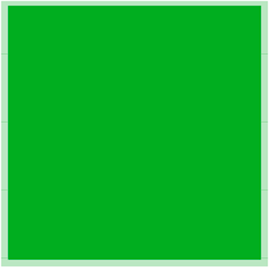

Spacing
Margin and padding
Spacing can be done by adding either margin or padding. both margin and padding has the same predefined spacing. There is 6 different spacing sizes.



HTML
<div class="margin-xl"></div>
<div class="margin-l"></div>
<div class="margin-r"></div>
<div class="margin-s"></div>
<div class="margin-xs"></div>
<div class="margin-xxs"></div>
<div class="padding-xl"></div>
<div class="padding-l"></div>
<div class="padding-r"></div>
<div class="padding-s"></div>
<div class="padding-xs"></div>
<div class="padding-xxs"></div>
CSS
margin: var(--margin-xl);
margin: var(--margin-l);
margin: var(--margin-r);
margin: var(--margin-s);
margin: var(--margin-xs);
margin: var(--margin-xxs);
padding: var(--padding-xl);
padding: var(--padding-l);
padding: var(--padding-r);
padding: var(--padding-s);
padding: var(--padding-xs);
padding: var(--padding-xxs);
Individual margin and padding
Individual spacing can be applied to a single side of an element by adding either margin or padding. both margin and padding has the same predefined spacing. again, there is 6 different spacing sizes.